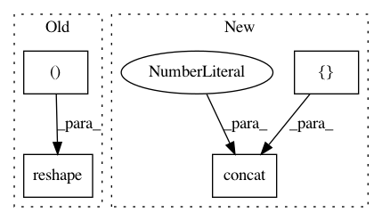

f3c511060ce62072a34a50319237d28b82d10448,gpflow/mean_functions.py,Constant,__call__,#Constant#Any#,126
Before Change
def __call__(self, X):
shape = [tf.shape(X)[0], 1]
return tf.tile(tf.reshape(self.c, (1, -1)), shape)
class Zero(Constant):
After Change
self.c = Parameter(c)
def __call__(self, X):
tile_shape = tf.concat([tf.shape(X)[:-1], [1]], axis=0,)
reshape_shape = tf.concat(
[tf.ones(shape=(tf.rank(X) - 1), dtype=default_int()), [-1]], axis=0,
)
return tf.tile(tf.reshape(self.c, reshape_shape), tile_shape)
In pattern: SUPERPATTERN
Frequency: 3
Non-data size: 4
Instances
Project Name: GPflow/GPflow
Commit Name: f3c511060ce62072a34a50319237d28b82d10448
Time: 2020-08-27
Author: dutordoirv@gmail.com
File Name: gpflow/mean_functions.py
Class Name: Constant
Method Name: __call__
Project Name: GPflow/GPflow
Commit Name: 5a945d67b37120610880c3323224a4e86404ae1d
Time: 2020-08-27
Author: dutordoirv@gmail.com
File Name: gpflow/mean_functions.py
Class Name: Constant
Method Name: __call__
Project Name: GPflow/GPflow
Commit Name: f01a7761d70d727ef4ea42c05464c2f85679ecd1
Time: 2018-12-27
Author: art.art.v@gmail.com
File Name: gpflow/kernels/base.py
Class Name: Kernel
Method Name: slice_cov